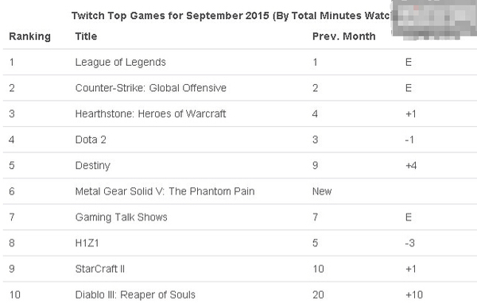

Twitch公布9月热播游戏榜Bug2下滑至第4位
Twitch近日公布了9月被观看时间最长的游戏榜单，其中《英雄联盟》与《CS：GO》仍然牢牢占据了排行榜的前两位。《炉石传说》从第4位升至第3，《DOTA2》从第3降至第4。

8月底，《炉石传说》新版本更新，“冠军的试炼”在8月25日正式发布，全新的132张卡牌显然再次提升了玩家对游戏的热度。
《DOTA2》在9月10日突然更新了新版本，玩家只能用新的起源2引擎来进行游戏，此前的起源1引擎已经无法使用，Valve这样的操作方式引起了部分玩家的不满。而最为关键的是，新版本BUG繁多，并且在整个9月，Valve各地的服务器都不稳定，韩服甚至出现了连续10天无法游戏的情况。在9月的Steam统计中，《DOTA2》的玩家人数也跌至了5月来的最低点。
星际争霸2虽然在休赛期，但是排名仍然上升一位，最近越来越多的主播开始尝试《虚空之遗》，这是不少玩家感兴趣的东西。另外，《暗黑3》从8月份的第20名跃至第10位。